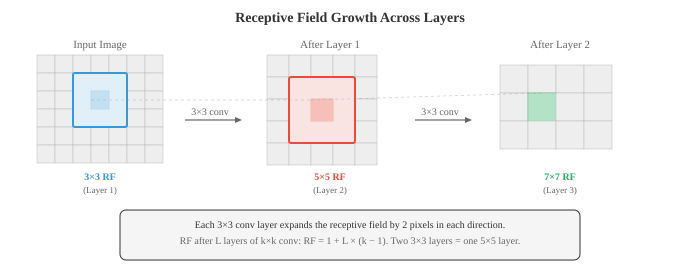
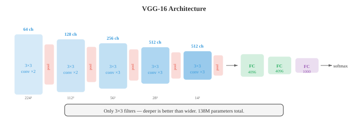
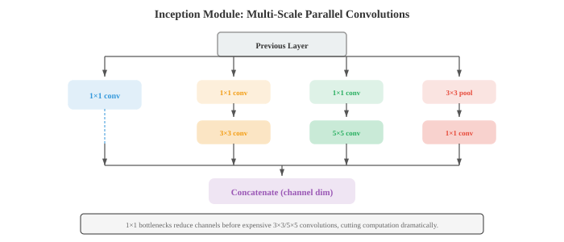
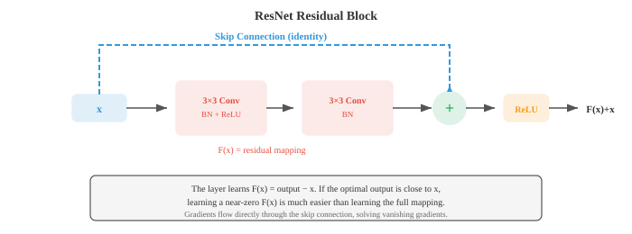
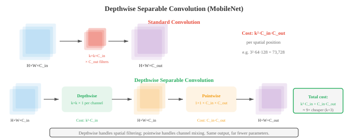
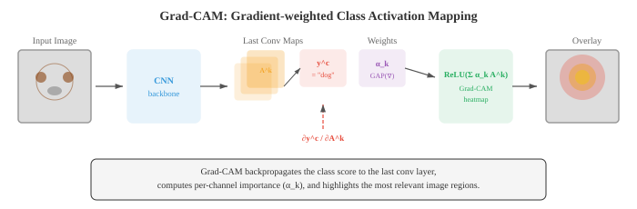

Convolutional Networks¶
卷积神经网络直接从 pixel 数据中学习空间 feature 层次结构，用经梯度优化的 filter 替代手工设计的 filter。本文涵盖 convolution 机制、pooling、stride、dilation、感受野，以及定义图像分类领域的标志性架构（LeNet、AlexNet、VGG、ResNet、Inception、EfficientNet）。
-
在文件 01 中，我们手工设计了用于边缘检测、模糊和角点检测的 filter。自然而然的问题是：能否从数据中学习最优的 filter？这正是卷积神经网络（CNN）所做的事情。
-
CNN 不是手工选择 filter 权重，而是通过 gradient descent（第 06 章）学习它们，直接发现对当前任务有用的 feature。
-
在第 06 章中，我们介绍了 convolution 操作、CNN 基础以及 filter 学习的概念。这里我们将深入探讨使 CNN 成为计算机视觉主导范式超过十年的架构创新。
-
回顾核心的 convolution 操作：大小为 \(k \times k\) 的 filter \(K\) 在输入 feature map 上滑动，在每个位置计算点积（第 06 章）。输出尺寸由三个超参数控制：
- Stride：filter 在各位置之间移动的 pixel 数。Stride 为 1 表示 filter 每次移动一个 pixel。Stride 为 2 表示移动两个 pixel，将空间维度减半。带 stride 的 convolution 是 pooling 下采样的替代方案。
- Padding：在输入边框周围填充零。"Same" padding（\(p = \lfloor k/2 \rfloor\)）保持空间维度不变。"Valid" padding（\(p = 0\)）会减小维度。
- Dilation：在 filter 元素之间插入间隔。dilation 为 2 的 3x3 filter 只用 9 个参数就能覆盖 5x5 的感受野。Dilated convolution 在不增加计算量的情况下扩大感受野。
-
convolution 后的输出空间尺寸：
-
其中 \(\text{in}\) 是输入尺寸，\(k\) 是 kernel 尺寸，\(p\) 是 padding，\(s\) 是 stride。该公式分别适用于高度和宽度。
-
神经元的感受野是原始输入中能影响该神经元值的区域。
- 早期 layer 有较小的感受野（它们能看到边缘等局部模式）。
- 更深的 layer 有更大的感受野（它们能看到如物体部件这样的更大结构）。
-
感受野随每个 layer 增长：每个卷积 layer 大约增长 \(k - 1\) 个 pixel（stride 或 dilation 更多时增长更多）。

-
Pooling layer 在保留最重要信息的同时缩减空间维度。
- Max pooling 取每个窗口内的最大值，保留最强的激活（最突出的 feature）。
- Average pooling 取均值，平滑 feature map。2x2 pool 加 stride 2 使两个空间维度均减半。
-
Global Average Pooling（GAP） 将每个 channel 的整个空间范围平均为单个数字，产生一个长度等于 channel 数量的向量。GAP 替代了许多现代架构末端的全连接 layer，大幅减少参数数量，并作为结构正则化器。
-
Batch Normalisation（BatchNorm） 将每个 mini-batch 内的激活值归一化为均值为零、方差为一，然后应用可学习的缩放和偏移（第 06 章）。在 CNN 中，BatchNorm 按 channel 应用：对每个 channel 独立地在 batch 和空间维度上计算统计量。它稳定训练过程，允许更高的学习率，并作为轻微的正则化器。
-
Dropout（第 06 章）在训练期间随机将神经元置零。
-
在 CNN 中，spatial dropout（Dropout2D）丢弃整个 feature map channel 而非单个 pixel，这更有效，因为 feature map 中相邻 pixel 高度相关。
-
Data augmentation 通过在训练期间对每张图像应用随机变换来人为扩充训练集：水平翻转、随机裁剪、旋转、色彩抖动（调整亮度、对比度、饱和度、hue）以及 cutout（遮蔽随机矩形区域）。网络以多种不同形式看到每张图像，迫使其学习变换不变的 feature，而不是记忆特定的 pixel 模式。
-
高级 augmentation 策略包括 Mixup（混合两张图像及其标签：\(\tilde{x} = \lambda x_i + (1-\lambda) x_j\)，\(\tilde{y} = \lambda y_i + (1-\lambda) y_j\)）、CutMix（将一张图像的矩形区域粘贴到另一张图像上，并按面积比例混合标签）以及 RandAugment（从固定集合中随机采样一系列 augmentation，使用单一强度参数）。
-
CNN 架构的历史是一个逐渐更深、更高效的设计故事，每个设计都解决了其前身的局限性。
-
LeNet-5（LeCun 等，1998）是最初的 CNN，专为手写数字识别而设计。两个卷积 layer 后跟三个全连接 layer，使用 average pooling 和 tanh 激活。它证明了学习到的 filter 优于手工设计的 feature，但以现代标准来看非常小（60K 参数）。
-
AlexNet（Krizhevsky 等，2012）以巨大优势赢得 ImageNet 竞赛，点燃了深度学习革命。关键创新：ReLU 激活（替代 tanh，tanh 存在梯度消失问题）、用于正则化的 dropout、data augmentation 以及在 GPU 上训练。五个卷积 layer，三个全连接 layer，6000 万参数。
-
VGG（Simonyan 和 Zisserman，2014）表明仅使用 3x3 filter 深度堆叠的效果优于更大的 filter。两个堆叠的 3x3 filter 与一个 5x5 filter 具有相同的感受野，但参数更少（\(2 \times 3^2 = 18\) vs \(5^2 = 25\)）且多一个非线性变换。VGG-16（16 层）和 VGG-19（19 层）至今仍被广泛用作 feature 提取器。该架构非常简单：具有递增 channel（64、128、256、512）的卷积块，每块后跟 max pooling。

- GoogLeNet/Inception（Szegedy 等，2014）引入了 Inception 模块：不是选择单一 filter 尺寸，而是并行使用 1x1、3x3 和 5x5 的 convolution，将输出拼接，让网络决定哪个尺度最有用。在较大的 filter 之前使用 1x1 convolution 作为 bottleneck 以减少计算量。GoogLeNet 在参数少 12 倍的情况下（6.8M vs 138M）取得了比 VGG 更好的准确率。

-
Inception 模块同时捕获多个尺度上的 feature。1x1 filter 捕获逐点模式，3x3 捕获局部纹理，5x5 捕获更大的结构。拼接将所有视角组合成丰富的表示。
-
ResNet（He 等，2016）解决了退化问题：更深的网络表现比浅层网络差，不是因为过拟合，而是因为更难以优化。解决方案是 skip connection（残差连接）：
- layer 学习残差 \(F(x) = \text{output} - x\)。如果最优变换接近恒等映射（这在深网络中很常见），学习接近零的残差比学习完整映射容易得多。Skip connection 还提供了直接的梯度通道，减少梯度消失。ResNet 训练了有 152 层的网络，比之前任何网络都深得多。

-
当输入和输出维度不同时（由于 stride 或 channel 变化），投影 shortcut 使用 1x1 convolution 对 \(x\) 进行尺寸匹配：\(\text{output} = F(x) + W_s x\)。
-
Bottleneck block（用于 ResNet-50 及更深的网络）使用三个 convolution：1x1 用于减少 channel，3x3 用于空间处理，1x1 用于将 channel 扩展回来。这比两个 3x3 convolution 更便宜，并允许网络更深。
-
DenseNet（Huang 等，2017）进一步发挥了 skip connection 的思想：在 dense block 内，每个 layer 都与所有后续 layer 相连。第 \(l\) 层接收来自所有前面 layer 的 feature map 作为输入：\(x_l = H_l([x_0, x_1, \ldots, x_{l-1}])\)，其中 \([\cdot]\) 表示沿 channel 维度的拼接。这鼓励 feature 重用，加强 gradient 流动，并减少总参数量。

-
高效架构面向在移动设备和边缘硬件上部署，这些场景中计算、内存和能耗均受限。
-
MobileNet（Howard 等，2017）用 depthwise separable convolution 替代标准 convolution，将操作分解为两步：
- Depthwise convolution：对每个输入 channel 应用一个 \(k \times k\) filter（无跨 channel 交互）
- Pointwise convolution：应用 1x1 convolution 跨 channel 合并信息
-
具有 \(C_{\text{in}}\) 个输入 channel 和 \(C_{\text{out}}\) 个输出 channel 的标准 \(k \times k\) convolution，每个空间位置的乘法次数为 \(k^2 \cdot C_{\text{in}} \cdot C_{\text{out}}\)。Depthwise separable convolution 的乘法次数为 \(k^2 \cdot C_{\text{in}} + C_{\text{in}} \cdot C_{\text{out}}\)，大约减少了 \(k^2\) 倍。对于 3x3 filter，大约便宜 9 倍。

-
MobileNet-V2 引入了 inverted residual block：用 1x1 convolution 扩展 channel，在扩展空间中应用 depthwise convolution，然后用 1x1 convolution 压缩回去。Skip connection 置于窄的（bottleneck）layer 上，与 ResNet 模式相反。扩展比通常为 6。
-
EfficientNet（Tan 和 Le，2019）引入了复合缩放：不是仅单独缩放深度、宽度或分辨率，而是使用固定比例同时缩放所有三个维度。给定缩放系数 \(\phi\)：
- 约束 \(\alpha \cdot \beta^2 \cdot \gamma^2 \approx 2\)（使总计算量随 \(\phi\) 每增加一个单位大约翻倍）。通过网格搜索找到基线比例 \(\alpha = 1.2\)，\(\beta = 1.1\)，\(\gamma = 1.15\)。EfficientNet-B0 到 B7 逐步放大，以远少于之前模型的参数和 FLOP 实现最先进的准确率。

-
ShuffleNet 通过使用 group convolution 后接 channel shuffle 来降低 1x1 convolution 的成本（在 MobileNet 风格架构中占主导）。Group convolution 将 channel 分组并在每组内独立进行 convolution，但这会阻止跨组信息流动。Shuffle 操作以可忽略的代价重排各组之间的 channel，恢复信息混合。
-
Transfer learning 是将在一个任务上训练的模型迁移到不同任务的实践。在计算机视觉中，这几乎总是意味着从在 ImageNet（140 万张图像，1000 个类别）上预训练的模型开始，迁移到特定领域的数据集（医学图像、卫星图像、制造业缺陷）。
-
Feature 提取：冻结所有卷积 layer，移除最终分类头，只在顶部训练新头。冻结的 layer 作为通用 feature 提取器。当目标域与 ImageNet 相似且目标数据集较小时效果良好。
-
Fine-tuning：解冻部分或全部卷积 layer，以较小的学习率进行训练。预训练权重作为起点而非固定 feature。Fine-tuning 通常先解冻后面的 layer（捕获高级、任务特定的 feature），并可选地解冻更早的 layer。
-
Transfer learning 有效是因为 CNN 的早期 layer 学习通用 feature（边缘、纹理、颜色），这对各种任务都有用，而后期 layer 学习任务特定的 feature。一个训练用于分类动物的网络，其边缘检测器对分类建筑物仍然有用。
-
CNN 可视化揭示了网络学到的内容，并帮助调试意外行为。
-
Activation map（feature map）展示给定输入图像时每个 filter 的输出。早期 layer 的激活看起来像边缘图；更深的 layer 产生越来越抽象、空间上更粗糙的激活。
-
Grad-CAM（梯度加权类激活映射，Selvaraju 等，2017）突出显示输入图像中对模型预测最重要的区域。其工作原理：
- 计算目标类别得分相对于最后一个卷积 layer 的 feature map 的 gradient（使用第 03 章的链式法则）
- 对这些 gradient 进行 global average pooling，得到每 channel 的重要性权重
- 计算 feature map 的加权组合并应用 ReLU
- 其中 \(A^k\) 是第 \(k\) 个 feature map，\(\alpha_k\) 是 channel \(k\) 的重要性权重，\(y^c\) 是类别 \(c\) 的得分。结果是一个粗粒度热力图，显示哪些区域驱动了分类。应用 ReLU 是因为我们关注对该类别有正面影响的 feature。

-
Feature 反转通过优化随机图像以匹配目标 feature（使用对 pixel 值的 gradient descent）来从 feature 表示重建输入图像。这揭示了网络在每个 layer 保留了哪些信息。早期 layer 重建几乎完美的图像；更深的 layer 产生可识别但失真的图像，表明细节空间信息丢失但语义内容得以保留。
-
Deep Dream 和神经风格迁移是 feature 可视化的创意应用。Deep Dream 最大化选定 layer 神经元的激活，产生超现实的、模式放大的图像。神经风格迁移优化目标图像，使其匹配一张图像的内容 feature（来自深层）和另一张图像的风格 feature（filter 激活的 Gram 矩阵，捕获纹理统计）。
编程任务（使用 CoLab 或 notebook）¶
-
在 JAX 中从零实现一个简单 CNN，包含两个卷积 layer、max pooling 和分类头。在合成 2D 模式分类任务上训练它。
import jax import jax.numpy as jnp import jax.lax as lax import matplotlib.pyplot as plt def conv2d(x, kernel, stride=1): """单输入、单 filter 的简单 2D convolution。""" return lax.conv(x[None, None], kernel[None, None], (stride, stride), 'SAME')[0, 0] def max_pool(x, size=2): """2x2 max pooling。""" H, W = x.shape x = x[:H//size*size, :W//size*size] return x.reshape(H//size, size, W//size, size).max(axis=(1, 3)) def init_cnn(key): k1, k2, k3 = jax.random.split(key, 3) return { 'conv1': jax.random.normal(k1, (5, 5)) * 0.3, 'conv2': jax.random.normal(k2, (3, 3)) * 0.3, 'fc_w': jax.random.normal(k3, (64, 1)) * 0.1, 'fc_b': jnp.zeros(1), } def forward_cnn(params, img): # Conv1 -> ReLU -> Pool h = jnp.maximum(0, conv2d(img, params['conv1'])) h = max_pool(h) # Conv2 -> ReLU -> Pool h = jnp.maximum(0, conv2d(h, params['conv2'])) h = max_pool(h) # 展平并分类 flat = h.ravel() # 填充或截断到固定长度 flat = jnp.pad(flat, (0, max(0, 64 - len(flat))))[:64] logit = (flat @ params['fc_w'] + params['fc_b']).squeeze() return jax.nn.sigmoid(logit) # 生成合成数据：类别 0 = 低频模式，类别 1 = 高频模式 def make_data(key, n=200): images, labels = [], [] for i in range(n): k1, key = jax.random.split(key) x, y = jnp.meshgrid(jnp.linspace(0, 4*jnp.pi, 32), jnp.linspace(0, 4*jnp.pi, 32)) if i < n // 2: img = jnp.sin(x) + jax.random.normal(k1, (32, 32)) * 0.1 labels.append(0) else: img = jnp.sin(4 * x) * jnp.sin(4 * y) + jax.random.normal(k1, (32, 32)) * 0.1 labels.append(1) images.append(img) return images, jnp.array(labels, dtype=jnp.float32) key = jax.random.PRNGKey(42) images, labels = make_data(key) params = init_cnn(jax.random.PRNGKey(0)) def loss_fn(params, img, label): pred = forward_cnn(params, img) return -(label * jnp.log(pred + 1e-7) + (1 - label) * jnp.log(1 - pred + 1e-7)) grad_fn = jax.grad(loss_fn) lr = 0.01 for epoch in range(5): total_loss = 0.0 for img, label in zip(images, labels): grads = grad_fn(params, img, label) params = {k: params[k] - lr * grads[k] for k in params} total_loss += loss_fn(params, img, label) print(f"Epoch {epoch}: loss = {total_loss / len(images):.4f}") # 测试准确率 preds = jnp.array([forward_cnn(params, img) > 0.5 for img in images]) acc = jnp.mean(preds == labels) print(f"Accuracy: {acc:.2%}") -
可视化不同 filter 尺寸如何影响感受野。展示两个堆叠的 3x3 filter 覆盖与一个 5x5 filter 相同的感受野，但参数更少。
import jax.numpy as jnp import matplotlib.pyplot as plt def compute_receptive_field(layers): """从 (kernel_size, stride) 元组列表计算感受野大小。""" rf = 1 # 从 1 个 pixel 开始 stride_product = 1 for k, s in layers: rf += (k - 1) * stride_product stride_product *= s return rf # 对比不同架构 configs = { 'Single 5x5': [(5, 1)], 'Two 3x3': [(3, 1), (3, 1)], 'Three 3x3': [(3, 1), (3, 1), (3, 1)], 'Single 7x7': [(7, 1)], '3x3 stride 2 + 3x3': [(3, 2), (3, 1)], } print(f"{'Config':<25} {'RF':>4} {'Params (per channel)':>20}") print('-' * 55) for name, layers in configs.items(): rf = compute_receptive_field(layers) # 参数量：每个 layer 的 k^2 之和（每对输入-输出 channel） params = sum(k * k for k, s in layers) print(f"{name:<25} {rf:>4} {params:>20}") # 可视化感受野 fig, axes = plt.subplots(1, 3, figsize=(14, 4)) for ax, (name, rf_size) in zip(axes, [('5x5 filter', 5), ('Two 3x3 filters', 5), ('Three 3x3 filters', 7)]): grid = jnp.zeros((9, 9)) c = 4 # 中心 half = rf_size // 2 grid = grid.at[c-half:c+half+1, c-half:c+half+1].set(1.0) ax.imshow(grid, cmap='Blues', vmin=0, vmax=1) ax.set_title(f'{name}\nRF = {rf_size}x{rf_size}') ax.set_xticks(range(9)); ax.set_yticks(range(9)) ax.grid(True, alpha=0.3) plt.suptitle('Receptive Field Comparison') plt.tight_layout(); plt.show() -
从零实现 Grad-CAM。给定一个预构建的简单 CNN，计算特定类别的 gradient 加权激活图，并将其可视化为热力图。
import jax import jax.numpy as jnp import matplotlib.pyplot as plt def simple_cnn(params, img): """简单 CNN，返回预测结果和最后一个卷积激活。""" # 卷积 layer（作为 Grad-CAM 的"最后一个卷积 layer"） H, W = img.shape k = params['conv'].shape[0] pad = k // 2 img_pad = jnp.pad(img, pad, mode='edge') activation_map = jnp.zeros((H, W)) for i in range(H): for j in range(W): activation_map = activation_map.at[i, j].set( jnp.sum(img_pad[i:i+k, j:j+k] * params['conv']) ) activation_map = jnp.maximum(0, activation_map) # ReLU # Global average pool -> dense -> 输出 pooled = activation_map.mean() logit = pooled * params['w'] + params['b'] return jax.nn.sigmoid(logit), activation_map # 创建测试图像：左侧有亮区域（类别指示器） img = jnp.zeros((32, 32)) img = img.at[8:24, 4:16].set(1.0) img = img.at[5:10, 20:28].set(0.3) key = jax.random.PRNGKey(42) params = { 'conv': jax.random.normal(key, (5, 5)) * 0.3, 'w': jnp.array(2.0), 'b': jnp.array(-0.5), } # 计算 Grad-CAM def class_score(params, img): pred, _ = simple_cnn(params, img) return pred # 获取激活图和 gradient pred, act_map = simple_cnn(params, img) grad_fn = jax.grad(lambda img: simple_cnn(params, img)[0]) img_grad = grad_fn(img) # 权重 = gradient 的 global average（简化的单 channel Grad-CAM） alpha = img_grad.mean() grad_cam = jnp.maximum(0, alpha * act_map) # ReLU grad_cam = (grad_cam - grad_cam.min()) / (grad_cam.max() - grad_cam.min() + 1e-8) fig, axes = plt.subplots(1, 3, figsize=(14, 4)) axes[0].imshow(img, cmap='gray'); axes[0].set_title('Input Image'); axes[0].axis('off') axes[1].imshow(act_map, cmap='viridis'); axes[1].set_title('Activation Map'); axes[1].axis('off') axes[2].imshow(img, cmap='gray', alpha=0.6) axes[2].imshow(grad_cam, cmap='jet', alpha=0.4) axes[2].set_title(f'Grad-CAM (pred={pred:.2f})'); axes[2].axis('off') plt.tight_layout(); plt.show() -
对比 depthwise separable convolution 与标准 convolution。统计两者的参数量和 FLOP，并展示它们以少得多的计算量产生相似的输出。
import jax import jax.numpy as jnp def standard_conv(x, kernel): """标准 convolution：(H, W, C_in) * (k, k, C_in, C_out) -> (H, W, C_out)。""" H, W, C_in = x.shape k, _, _, C_out = kernel.shape pad = k // 2 x_pad = jnp.pad(x, ((pad, pad), (pad, pad), (0, 0)), mode='constant') out = jnp.zeros((H, W, C_out)) for i in range(H): for j in range(W): patch = x_pad[i:i+k, j:j+k, :] # (k, k, C_in) for c in range(C_out): out = out.at[i, j, c].set(jnp.sum(patch * kernel[:, :, :, c])) return out def depthwise_separable_conv(x, dw_kernel, pw_kernel): """Depthwise separable：先 depthwise（k,k,C_in），再 pointwise（C_in, C_out）。""" H, W, C_in = x.shape k = dw_kernel.shape[0] pad = k // 2 x_pad = jnp.pad(x, ((pad, pad), (pad, pad), (0, 0)), mode='constant') # Depthwise：每个 channel 一个 filter dw_out = jnp.zeros((H, W, C_in)) for i in range(H): for j in range(W): for c in range(C_in): patch = x_pad[i:i+k, j:j+k, c] dw_out = dw_out.at[i, j, c].set(jnp.sum(patch * dw_kernel[:, :, c])) # Pointwise：跨 channel 的 1x1 conv out = dw_out @ pw_kernel return out # 参数设置 H, W, C_in, C_out, k = 8, 8, 16, 32, 3 key = jax.random.PRNGKey(42) k1, k2, k3, k4 = jax.random.split(key, 4) x = jax.random.normal(k1, (H, W, C_in)) std_kernel = jax.random.normal(k2, (k, k, C_in, C_out)) * 0.1 dw_kernel = jax.random.normal(k3, (k, k, C_in)) * 0.1 pw_kernel = jax.random.normal(k4, (C_in, C_out)) * 0.1 # 对比 std_params = k * k * C_in * C_out dw_params = k * k * C_in + C_in * C_out std_flops = H * W * k * k * C_in * C_out dw_flops = H * W * (k * k * C_in + C_in * C_out) print(f"Standard conv: {std_params:>8,} params, {std_flops:>10,} FLOPs") print(f"Depthwise separable conv: {dw_params:>8,} params, {dw_flops:>10,} FLOPs") print(f"Parameter reduction: {std_params / dw_params:.1f}x") print(f"FLOP reduction: {std_flops / dw_flops:.1f}x") std_out = standard_conv(x, std_kernel) ds_out = depthwise_separable_conv(x, dw_kernel, pw_kernel) print(f"\nStandard output shape: {std_out.shape}") print(f"Depthwise sep output shape: {ds_out.shape}")